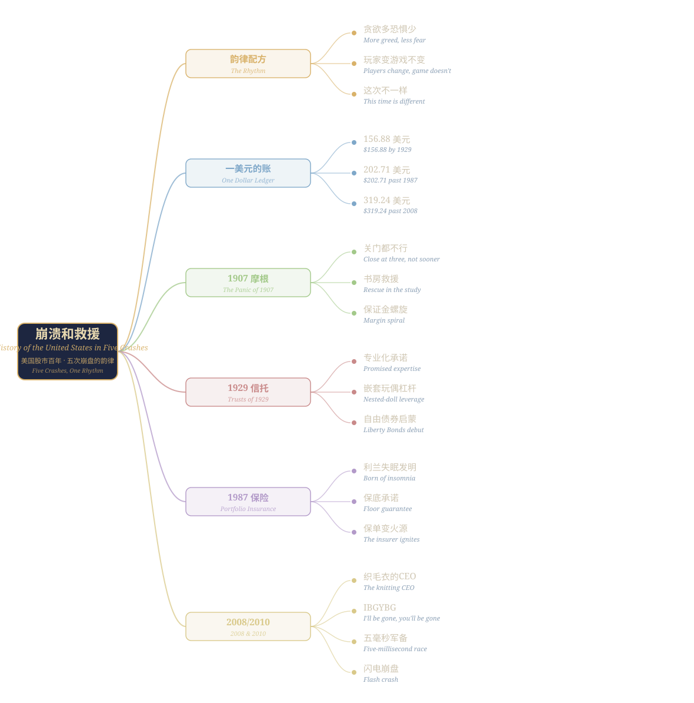

崩溃和救援
〇 · 书籍信息
基本信息
| 书名 | 《崩溃和救援：美国股市百年跌荡启示录》——记录美股自 1907 年以来的五次崩盘：每次崩盘的催化因素不同，但「市场从繁荣狂热到泡沫幻灭的韵律总是相似的」 |
|---|---|
| 视角 | 交易期权出身的作者把崩盘写成事故报告：「这就好比汽车相撞、飞机坠毁，原因肯定是多方面的」——但上百年来，改变的是股价、上市公司和投资者结构，不变的是人性的贪婪与恐惧 |
| 结构 | 序言（韵律总论）+ 自序（1 美元的百年账）+ 五段崩盘史：1907 大恐慌（摩根救市）→ 1929 大萧条（投资信托）→ 1987 黑色星期一（投资组合保险）→ 2008 次贷危机（桑德勒夫妇）→ 2010 闪电崩盘（毫秒时代） |
| 警句 | 宋雪涛序言引作者的话：「人们总是有太多的贪欲，却缺少足够的恐惧」——而每一代人都相信：这次不一样 |
| 一句话 | 崩盘的配方从未变过：牛市十年的贪婪 + 一件「听起来很美」的新金融工具 + 一个与金融无关的催化剂——1907 年是旧金山地震，2010 年是一场远方的骚乱。 |
一 · 核心主题总览
五次崩盘反复出现的四组母题：① 新金融工具的诅咒
美股的历次崩盘「无一例外地存在金融工具的影子」：20 年代的投资信托承诺专业化管理与多样化，「恰恰相反的是，投资信托却增加了风险」；80 年代的投资组合保险承诺保住底线，「然而下降的深度和广度反而加剧了」；2000 年代的抵押贷款支持证券同样被机构信任——每一次「听起来很美」的创新，都在股市最脆弱时注入了不确定性。
② 与金融无关的催化剂
「那些不可知或不可预见的因素是引爆崩盘的催化剂」：1907 年像地震一样随机发生（旧金山大地震的保险赔付要靠黄金横渡大西洋），2010 年「就好比在一个遥远的地方发生的一场骚乱」——每一次催化剂最初似乎都与金融无关，但现代经济与金融关系太紧密，火星总会找到火药。
③ 摩根式的救援
救援史的主角是私人银行家与政府的接力：1907 年摩根把银行家锁在书房里凑钱救市——「今天早一分钟关门都不行！」；1929 年后的美联储、2008 年的救助计划——政府往往选择最糟糕的时机干预，一直等到金融压力让支持者难以承受为止。
④ 速度的退化
1914 年巴拿马运河开通前，黄金从伦敦到旧金山要航行数周；2010 年，最复杂的金融交易在 20 毫秒内完成，而微波发射塔建成后「执行交易的时间会再缩短 5 毫秒」——「以往人们最关心的问题是哪只股票更值钱，现在更加关心的是怎么以最快的速度买进或卖出」——速度的进步带来了新形式的崩溃：闪电崩盘。
二 · 第一段 韵律 —— 五次崩盘的共同点—— 1 美元的账 · 玩家变了游戏没变 ——
一美元的百年复利
自序用一枚硬币讲清崩盘的真实分量：1899 年 12 月 31 日投资 1 美元给道琼斯工业指数，1929 年风暴前增值到 156.88 美元；避开 1987 年 10 月 19 日，202.71 美元；躲过 2008 年那 5 天「股市倒霉日」，319.24 美元。结论有两面：崩盘是长期复利曲线上的深坑而非断崖——「遗憾的是，股市崩溃的代价不仅是财产损失，它会给人们带来更多的恐惧感，使人们从此不敢再投资股市」——被吓离牌桌的人，才是崩盘最大的输家。
◆ 语言学习 · 概念 · 崩盘账本
| 156.88 / 202.71 / 319.24 | 1 美元的三段账：避开崩盘的增量没有想象中大 |
|---|---|
| 股市倒霉日 | 2008 年最坏的 5 天——崩盘的密度特征 |
| 恐惧感 | 崩盘的二级伤害：财产损失之外的离场冲动 |
| 长期复利 | 崩盘不改变方向——前提是你在场 |
句型 ｜ 「如果那个投资者能够躲过 2008 年那 5 天的『股市倒霉日』，那么他的 1 美元投资将变成 319.24 美元。」——数字自带的克制：避开崩盘当然好，但账面告诉你：吓出局比挨一记跌停更贵。
玩家变了，游戏没变
作者引爱因斯坦作方法论：「想象力比知识更重要」——「即使玩家变了，但只要游戏没变，我们就依然能够想象股市会如何再次崩盘」。共同点清单被逐条列出：牛市十年中两年大举买入；过度相信能理解的新金融措施；政府等到压力让支持者难以承受才干预；外部催化剂推过临界点——「每一次崩溃前经常出现的警告似乎特别有先见之明。我们为什么就是不听呢？」。答案嵌在历史里：20 年代信投资信托、80 年代信投资组合保险、2000 年代信 MBS——每一代人都坚信「政府的新策略已经把风险从股市里挤压出去了」。
◆ 语言学习 · 概念 · 崩盘配方
| 韵律 | 崩盘的可重复结构：贪婪 → 新工具 → 催化剂 → 恐慌 |
|---|---|
| 游戏没变 | 玩家轮替而配方恒定——历史类比的认识论 |
| 这次不一样 | 每一代人的信念：新策略挤出了风险——崩盘的门票 |
| 警告的先见 | 崩盘前的忠告总能事后应验——没人听的原因是牛市 |
习语 ｜ 「即使玩家变了，但只要游戏没变，我们就依然能够想象股市会如何再次崩盘。」——全书的认识论纲领：预测下一次崩盘的时点是徒劳的，识别崩盘的配方是有用的——想象力代替水晶球。
三 · 第二段 1907 与 1929 —— 摩根与泡沫—— 关门时间 · 投资信托 ——
摩根：今天早一分钟关门都不行
1907 年大恐慌的高潮一幕：纽约证券交易所总裁托马斯找到摩根——「摩根先生，我们将不得不关闭证券交易所。」「什么？」「我们将不得不关闭证券交易所。」摩根问：「你们一般都是什么时候关门？」「哦，三点钟。」「今天早一分钟关门都不行！」——摩根女婿回忆，他说这话时用右手掐算着时间强调每个词，中指指向托马斯。逻辑是纯粹的信心管理：关所等于宣布恐慌成立，会把“缺钱”写成“无解”——交易所多开一小时，信心就多续一小时；随后摩根把银行家锁进书房凑出救援资金。
◆ 语言学习 · 概念 · 恐慌管理
| 1907 大恐慌 | 第一次现代股市崩盘：杠杆投机 + 地震催化剂 |
|---|---|
| 关门仪式 | 关所的象征学：宣布恐慌成立 vs 维持运转的信心 |
| 摩根救援 | 私人银行家的书房动员——美联储诞生前的最后防线 |
| 保证金螺旋 | 股票跌 10 个点 → 补抵押 → 卖股票 → 再跌：螺旋的力学 |
习语 ｜ 「今天早一分钟关门都不行！」——七个字的危机管理课：恐慌的本质是定价信心——救援的最高技术不是注入多少钱，是拒绝表演失败。
投资信托：套娃的风险
1929 年的新金融工具是投资信托：「投资信托公司承诺对资产进行专业化管理、投资多样化，认为两者可以减少或消除风险，然而恰恰相反的是，投资信托却增加了风险」——嵌套结构放大杠杆：一只信托持有另一只信托，层层上浮的杠杆让「多样化」变成「共振」。20 年代牛市与自由债券普及共同把美国从债券投资者改造成股票投资者——「自由债券是许多美国人的第一次投资」：第一次世界大战顺手完成了全民投资者的启蒙，也顺手埋下了把全民拉进崩盘的通道。
◆ 语言学习 · 概念 · 结构风险
| 投资信托 | 20 年代的明星工具：专业化管理承诺——实际是嵌套杠杆 |
|---|---|
| 嵌套玩偶 | 信托套信托的结构：多样化幻觉下的共振装置 |
| 自由债券 | 一战的全民投资启蒙——美国人第一次成为投资者 |
| 承诺与反噬 | 新工具的共同剧本：承诺降风险，实际放大风险 |
句型 ｜ 「认为两者可以减少或消除风险，然而恰恰相反的是，投资信托却增加了风险。」——序言里最工整的一记反转：风险从未被消除，只是换上了更难看懂的结构——看不懂本身就是风险。
四 · 第三段 1987 —— 谁发明了保险—— 利兰失眠 · 组合保险 ——
失眠者的发明
黑色星期一的祸根始于一次失眠：1973–1975 年衰退期，35 岁的伯克利初级学者利兰「生计处于危险中，是时候该发明点什么了」——哥哥约翰的哀叹给了灵感：「你不可能在你的投资组合上买到保险。这样一来，人们就不会在最糟糕的时候抛售股票，也没办法参与随后的市场反弹」。于是「投资组合保险」诞生：「只要承诺保证一个最低水平，之后组合价值就不会下降」——用期货动态对冲模拟出一份保单；听起来天衣无缝，前提是所有人不同时行使保单。
◆ 语言学习 · 概念 · 组合保险
| 投资组合保险 | 利兰与鲁宾斯坦的发明：用动态对冲模拟保单 |
|---|---|
| 保底承诺 | 最小价值保证——卖给机构的心安药 |
| 动态对冲 | 跌就卖、跌更多就卖更多的机械规则 |
| 共振条件 | 保单的隐藏前提：大家不要同时跑——恰恰是危机会剥夺的 |
句型 ｜ 「生计处于危险中，是时候该发明点什么了。」——金融创新的第一推动力自白：许多改变市场结构的发明，起点不是洞察，是一份不安分的工资单。
黑色星期一：保单自己变成了火
1987 年 10 月 19 日，道琼斯指数单日暴跌，新工具被反噬：组合保险的机械规则在下跌中批量卖出期货，期货贴水拖累现货，现货下跌触发更多卖单——为「消除风险」而生的工具，成了下跌的加速器；序言的判词精确：「下降的深度和广度反而加剧了」。作者由此提炼出三次崩盘的通例：投资信托（1929）、组合保险（1987）、抵押贷款支持证券（2008）——「在我们观察这些危险是如何形成时」，共同点是「过度相信我们能理解的新金融措施」——理解了一半的工具，是最危险的工具。
◆ 语言学习 · 概念 · 工具反噬
| 黑色星期一 | 1987.10.19：组合保险的集体执行日 |
|---|---|
| 卖压螺旋 | 机械卖出 → 期货贴水 → 现货下跌 → 更多机械卖出 |
| 理解了一半 | 危险工具的标准画像：模型对，世界不对 |
| 工具的影子 | 序言命题：历次崩盘无一例外有金融工具的影子 |
习语 ｜ 「这种巧妙的方法本应把大部分风险从投资中挤出来，但却制造了另一种巨大的新风险。」——自序对创新的最终判决：风险守恒定律的金融版——挤出的风险没有消失，只是改了姓名与住址。
五 · 第四段 2008 与 2010 —— 夫妻店与毫秒—— 织毛衣的 CEO · 五毫秒的军备 ——
桑德勒夫妇与世界储蓄
2008 危机的人性切面从一对夫妻写起：玛丽安·桑德勒开会时安静地织毛衣——这位华尔街第二位职业女性与丈夫赫伯经营着「世界储蓄」：1963 年以 380 万美元买下金色西部储蓄所时只有 2 个办事处、26 名雇员、3400 万美元存款。他们的故事横跨储贷时代与次贷时代：「他们可以把先前在纽约学到的东西用在这里……最先关注的就是成本，不仅是抵押贷款产生坏账的成本，还有运营的成本」——夫妻店从谨慎起家，最终在「所有美国人通过投资都可以买得起房子」的狂言里被卷入系统性坍塌：个人的审慎无法对冲时代的杠杆。
◆ 语言学习 · 概念 · 次贷生态
| 世界储蓄 | 桑德勒夫妇的储蓄贷款帝国——从小夫妻店到系统关键点 |
|---|---|
| IBGYBG | 华尔街黑话「我会被原谅的，你会被提拔的」：问责缺席的注脚 |
| 买得起房子的狂言 | 次贷时代的政治叙事——信贷标准为口号让路 |
| 审慎的极限 | 夫妻店的教训：个体谨慎赢不了系统杠杆 |
句型 ｜ 「还有一些人口出狂言，认为所有美国人通过投资都可以买得起房子。」——自序点名政治话术：当目标从「可行性」换成「口号性」，信贷标准就从堤坝降级成可谈判的报价。
2010 闪电崩盘：五毫秒的战争
最后一次崩盘与经济基本面无关：2010 年 5 月 6 日「闪电崩盘」，「当时一种对冲算法将交易量与流动性混为一谈」——机器把巨量卖单当成了真实流动性信号，瞬间抽干市场深度；一位希腊孕妇（书以她产检之约开场）的下午，道琼斯指数闪跌近千点又瞬间弹回。速度军备的荒诞被序言点破：交易 20 毫秒完成已经够快，微波发射塔让时间「再缩短 5 毫秒」——「现在更加关心的是怎么以最快的速度买进或卖出」；作者判词：「股市依赖几乎瞬间就能够完成交易的电子交易系统，这显然是一种退化」——快，本身就是一种新的脆弱。
◆ 语言学习 · 概念 · 闪电崩盘
| 闪电崩盘 | 2010.5.6：千点暴跌与瞬间收复——机器时代的崩盘形态 |
|---|---|
| 算法误解 | 对冲算法把交易量当流动性——机器读错了世界 |
| 微波发射塔 | 速度军备：为 5 毫秒修建的基础设施 |
| 退化的进步 | 作者的悖论修辞：更快的技术，更脆的市场 |
习语 ｜ 「以往人们最关心的问题是哪只股票更值钱，现在更加关心的是怎么以最快的速度买进或卖出。」——一句话写完市场价值观的迁移：当「值多少」让位给「多快」，定价问题就变成了接力问题——而接力棒，交给了机器。
六 · 人物图鉴与成长弧线—— 主角配角 · 一张表看穿 ——
主要人物
内申斯（Scott Nations）——期权交易员出身的作者——把五次崩盘写成事故调查报告：他的职业视角让「 greed 与恐惧」落到交易机制、保证金螺旋与对冲规则上
摩根（J.P. Morgan）——1907 年大恐慌的救火队长——「今天早一分钟关门都不行！」：美联储诞生之前，一个人的意志充当了最后贷款人
利兰（Hayne Leland）——投资组合保险的发明人——失眠的伯克利学者：为生计发明的工具，13 年后在黑色星期一加速了下跌
桑德勒夫妇——世界储蓄的创始人——从 380 万美元夫妻店起家的谨慎经营者：2008 年证明审慎个人也赢不了系统杠杆
次要人物（功能位）
| 托马斯 | 纽约证券交易所总裁——1907 年请求关门的报信人：与摩根的对话成了危机管理的经典教材 |
|---|---|
| 宋雪涛 | 中文版序言作者——把 2018 年与 1987 年并排对比：劳动生产率、金融周期、回购支撑牛市——「似曾相识的一幕仿佛正在重演」 |
| 斯特朗 | 摩根培养的银行家——从 1907 书房救援走向美联储：私人救援制度化的桥梁 |
| 帕帕珊娜索珀萝 | 闪电崩盘章节的普通人——怀着身孕等丈夫接去产检：历史以她的 52 分钟为计时单位——崩盘从来不只是指数的事 |
七 · 主题与象征—— 每个道具都在说话 ——
| 1 美元 ↔ 复利 | 百年账本——崩盘是深坑不是断崖：怕的是离场，不是下跌 |
|---|---|
| 关门时间 ↔ 信心 | 摩根的三点钟——交易所开着，恐慌就没有盖章 |
| 保单 ↔ 火源 | 组合保险——买给市场的保险，最后成了烧市场的火 |
| 织毛衣 ↔ 审慎 | 玛丽安开会织毛衣——最谨慎的人也拴不住最狂欢的系统 |
| 5 毫秒 ↔ 脆弱 | 微波塔军备——速度是新时代的风险敞口 |
八 · 写作手法赏析—— 怎么写，就能怎么学 ——
① 事故报告体
每次崩盘拆成催化因素、过程、救援——像调查飞机失事一样调查股市：黑匣子全打开
② 小人物开场
桑德勒织毛衣、利兰失眠、孕妇等产检——大危机全部从一张具体的床或会议桌写起
③ 数字证人
156.88 / 202.71 / 319.24；20 毫秒 / 5 毫秒——用可核对的数字代替形容词
④ 对照序言
中文版序把 2018 与 1987 排比对照——读者合书即知：这不是历史书，是当前的天气预报
九 · 名段欣赏—— 原文精读 · 逐段赏析 ——
十 · 金句摘录—— 14 条 · 中英对照 · 带出处 ——
"每次股市崩盘的催化因素不同，但是市场从繁荣狂热到泡沫幻灭的韵律总是相似的。"—— 中文版序 · 宋雪涛
"上百年来，改变的是股价、上市公司和投资者结构，不变的是人性的贪婪与恐惧。"—— 中文版序 · 宋雪涛
"人们总是有太多的贪欲，却缺少足够的恐惧。"—— 中文版序 · 引作者
"美股的历次崩盘都无一例外地存在金融工具的影子。"—— 中文版序 · 引作者
"即使玩家变了，但只要游戏没变，我们就依然能够想象股市会如何再次崩盘。"—— 自序
"假如一个投资者于1899年12月31日投资1美元给道琼斯工业指数，那么在1929年华尔街股市风暴到来之前，他的投资收益已经增加到156.88美元。"—— 自序
"摩根先生，我们将不得不关闭证券交易所。"—— 1907 · 托马斯
"今天早一分钟关门都不行！"—— 1907 · 摩根
"投资信托公司承诺对资产进行专业化管理、投资多样化，认为两者可以减少或消除风险，然而恰恰相反的是，投资信托却增加了风险。"—— 自序
"生计处于危险中，是时候该发明点什么了。"—— 1987 · 利兰
"太糟糕了，你不可能在你的投资组合上买到保险。这样一来，人们就不会在最糟糕的时候抛售股票，也没办法参与随后的市场反弹。"—— 1987 · 约翰·利兰
"投资组合保险，只要承诺保证一个最低水平，之后组合价值就不会下降，然而下降的深度和广度反而加剧了。"—— 中文版序
"以往人们最关心的问题是哪只股票更值钱，现在更加关心的是怎么以最快的速度买进或卖出。"—— 自序
"股市依赖几乎瞬间就能够完成交易的电子交易系统，这显然是一种退化。"—— 自序
十一 · 拓展阅读—— 原文 · 词条 · 译文 ——
十二 · 个人感悟与心得—— 三点心得 ——
三点感悟
① 把「这次不一样」当警报器
五次崩盘的共同门票是「这次不一样」：每当听到新工具承诺挤出风险，第一反应应该是查它的「共振条件」——什么时候大家会同时跑？答案就是崩盘的剧本。
② 恐惧比跌幅更贵
一美元的账算得明白：长期收益的差别远小于被吓出局的机会成本——崩盘的应对方案要写在崩盘之前：仓位扛得住跌停，纪律扛得住新闻。
③ 看不懂的工具不碰
投资信托、组合保险、MBS 共享同一画像：理解了一半的工具最危险——你自己讲不清楚它的「共振条件」，就等于没有保单，只有赌注。
五次崩盘，一副牌：贪婪出牌，创新发牌，催化剂收牌，恐惧摊牌——一百年了，换的只是玩家名字；而救援的全部秘密，摩根在三点钟前已经说完了。
十三 · 一页速查（复习用）
| 五次崩盘 | 1907 · 1929 · 1987 · 2008 · 2010——催化因素不同，韵律相同 |
|---|---|
| 一美元的账 | 156.88 → 202.71 → 319.24：崩盘是深坑不是断崖，离场更贵 |
| 工具的影子 | 投资信托 / 组合保险 / MBS：承诺降风险，实际放大风险 |
| 摩根时刻 | 「今天早一分钟关门都不行！」——信心管理先于资金救援 |
| 速度的退化 | 20 毫秒到 5 毫秒：闪电崩盘是快本身的脆弱——定价让位于接力 |
十四 · 全书思维导图—— 一图纵览 ——

一图纵览全书骨架 · 中英双语对照 · 手机端可左右滑动查看全图